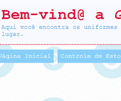

Futura desenvolvedora Full Stack pela Labenu. Adoro games, filmes, livros e música. Atualmente encantada pelo front-end e me divertindo com diferentes layouts de páginas web.
Futura desenvolvedora Full Stack pela Labenu. Adoro games, filmes, livros e música. Atualmente encantada pelo front-end e me divertindo com diferentes layouts de páginas web.
Minha experiência com programação começou antes mesmo de eu conhecer o termo, lá no ensino fundamental, quando criava e estilizava blogs. Graças a esse passatempo, me aprofundei, mais tarde, no mundo das artes visuais, mais especificamente das artes digitais. Assim acabei voltando à programação, através do gosto por jogos digitais. Após algumas práticas de criação de jogos, que se extenderam desde a concepção visual até a programação em si, me apaixonei novamente pelos códigos.
Almejo combinar todo o conhecimento artístico que acumulei ao longo desses anos com o que estou aprendendo no momento, a fim de criar designs estetica e funcionalmente belos.
Detalhes mais técnicos você pode encontrar nesta páginasobremim!
| Jogo: Blackjack | Página Web: Sistema Loja |
|---|---|
 |
 |
| Javascript | Html, CSS |
Se quiser conhecer mais, acesse minha página no GitHub.
Para entrar em contato comigo, basta preencher o formulário.
Não esqueça também de me seguir nas redes sociais!